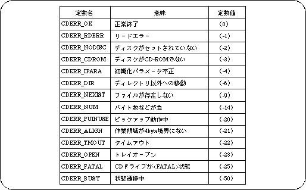

Return to previous page | Return to menu | Go to next page
Explanation File handle for reading a file.
Structure typedef struct {
Sint16cn;
Sint16 sm;
Sint16 ci;
}CDKEY;
Member cn channel number
sm submode
ci coding information
Explanation Specifies the key for classifying sector data using the subheader.
Remarks If not selected, specify CDKEY_NONE.
Set CDKEY_TERM to the terminal cn.
Structure typedef struct {
Void * addr;
Sint32 unit;
Sint32 size;
} TRANS_COPY;
, Typedef struct {
Sint32 (* func) (void * obj, Uint32 * addr,
(Sint32 adinc, Sint32 nsct);
Void * obj;
{} TRANS_FUNC;
, Typedef struct {
Sint32 type;
Union {
TRANS_COPY copy;
TRANS_FUNC fucn;
Trans};
«CDBUF;
Member type CDBUF_COPY Copy to work RAM
CDBUF_FUNC transfer function
CDBUF_TERM termination
If type = CDBUF_COPY: copy
Addr address of read area (NULL if not read)
Unit CDBUF_FORM1 The size of the reading area is 2048 bytes.
* CDBUF_FORM2 Read area size is 2324 bytes
CDBUF_BYTE Read area size in bytes
Size size Number of read area units (0 if not read)
If type = CDBUF_FUNC: func
Func transfer function
Obj object
Explanation Set the reading area or transfer function.
Note: The reading area must be 4 byte boundary.
Parameter nfile Maximum number of files in one directory Work work area Function Performs initial settings for using the CD. Return value Number of files in the root directory (if negative, error code) Note: The size of the area is obtained by SLCD_WORK_SIZE (nfile). Nfile nfile Maximum number of files in each directory The work area must be a 4-byte boundary.
Parameter pathname Path name (relative path / absolute path can be specified) Function Moves the directory. Return value Number of files in the directory (if negative, error code)
Parameter pathname Path name (relative path / absolute path can be specified) Key key information for classifying stream data Function Opens a file. Return value File handle (NULL if not open) Remarks: Closed automatically when reading is interrupted or completed.
Parameter cdhn file handle Buf reading area information (corresponds to the key when opened) Function Starts playback and reads data from CD. Return value Error code Remarks: If NULL is specified for the reading area and 0 is specified for the number of units, prefetching is executed. Reading area If “CPU” is specified, it will be transferred using CPUDMA.
Parameter cdhn file handle Buf reading area information Ndata Number of valid data in the transfer area (NULL if not required) Function Transfers data only when file reading is paused. Return value Error code Remarks: “slCdLoadFile ()” can be transferred only to keys that specify NULL in the transfer area. This function does not end until the transfer is complete.
Parameter cdhn file handle Key information for classifying key data Function Initializes the transfer destination pointer. Return value TRUE Successful completion , FLASE A key that is not open was specified.
Parameter cdhn file handle Function Interrupts file reading Return value Error code
Parameter cdhn file handle Function Pauses file reading. Return value Error code
Parameter cdhn file handle However, CD block status can be acquired by specifying the following constants. Snippet Get the number of empty sectors in CDREQ_FREECD block CDREQ_FAD current pickup location CDREQ_DRVCD drive status If ndata file handle is specified, the number of valid data in the transfer area * (NULL if not required) Function Acquires the status for the issued request. Return value Status when file handle is specified (if negative, error code) * CDSTAT_PAUSE loading is stopped 中 Loading CDSTAT_DOING `` CDSTAT_WAIT transfer waiting state '' Loading of CDSTAT_COMPLETED is complete If CDREQ_FREE is specified, the number of free sectors in the CD block Pickup location if CDREQ_FAD is specified If CDREQ_DRV is specified, CD drive status In progress of CDDRV-BUSY state transition In the CDDRV_PAUSE pause of CDDRV_PAUSE S CDDRV_STDBY standby * Playing CDDRV_PLAYCD In CDDRV_SEEK seek for CDDRV_SEEK C: Replaying CDDRV_SCAN scan The CDDRV_OPEN tray is open There is no CDDRV_NODISC disk CDDRV_RETRY Read retry processing in progress CDDRV_ERROR read error occurred * CDDRV_FATAL fatal error occurred
